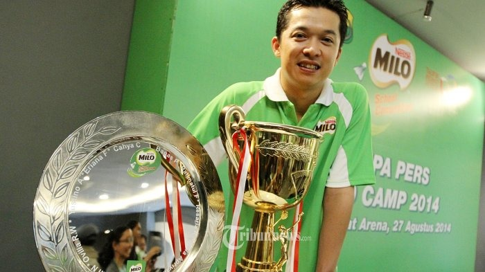
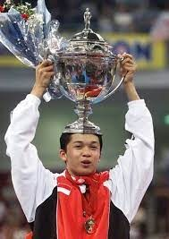
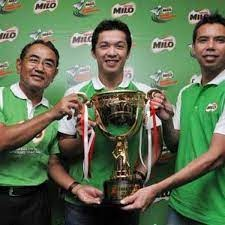

Next Info
MORE NEWS


Juara Kejuaraan Asia
Masyarakat asia menjadi saksi kehebatan taufik hidayat, yang berhasil menjuarai kejuaraan asia yang saat itu berlangsung di kuala lumpur malaysia. Yaitu kejuaraan asia tahun 2007
Read more

Juara Kejuaraan Dunia
Tahun 2005 menjadi tahun yang sangat manis buat taufik hidayat, karena dia berhasil menjadi orang nomer satu di tunggal putra yaitu dia bisa menjuarai kejuaraan dunia.
Read more

Juara Malaysia Open
Tahun 2005 semua masyarakat yang menonton dan mengetahui taufik hidayat menjadi saksi kehebatan taufik hidayat yang berhasil menjuarai malaysia open.
Read more